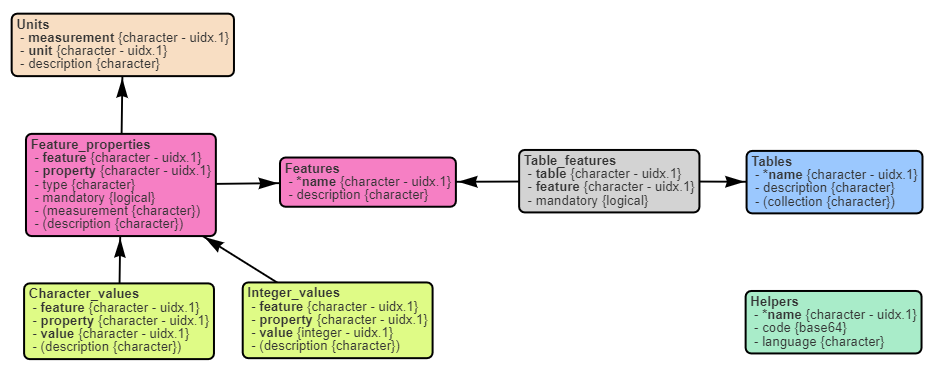

Defining and using Requirements for Knowledge Management (KMR) in TKCat
Patrice Godard
May 07, 2024
Source:vignettes/TKCat-KMR-POK.Rmd
TKCat-KMR-POK.RmdIn TKCat, knowledge resources are manipulated as modeled database (MDB) objects. These objects provide access to the data tables along with a general description of the resource and a detail data model documenting the tables, their fields and their relationships. These MDB are then gathered in TKCat catalogs that can be explored an shared.
Beside the relational model, no additional constraints are applied to an MDB. This allows for high flexibility in the data that can be managed. However, in some cases, it could be useful to add further constraints to ensure that the data is compatible with specific analysis or integration workflows. In TKCat, this feature is supported by KMR (Knowledge Management Requirements). A KMR object is meant to be shared and centrally managed. MDBs intended to meet these requirements must contain technical tables referring to the corresponding KMR. When grouped in the same TKCat catalog, KMRs and MDBs form a coherent corpus of knowledge that can be leveraged consistently by KMR-tailored functions.
The first part of this document describes how to create a KMR object. The second part shows how to refer to these requirements in an MDB object. Finally, the third part describes how to use KMR and MDB together to leverage pieces of knowledge (POK).
Defining KMR
KMR organization
A KMR object is an MDB object with a predefined data model. It is
simply created by calling the create_KMR() function which
takes some metadata as arguments.
ebkm <- create_KMR(
name="EBKM",
title="Experimental and Biological Knowledge Management",
description="Requirements for integrating knowledge from biological research activities",
version="0.1",
maintainer="[Patrice Godard](mailto:patrice.godard@gmail.com)"
)The figure below shows the data model of such an object. A KMR object describes requirements regarding:
Tables: the features that can be found in the table and which of them are mandatory.
Features: the properties composing the feature and which of them are mandatory. In tables providing the feature, there should be one column per feature property.
Feature properties: the type and the kind of measurement (if relevant)
Units: possible units for measurements
Possible character or integer values for measurement properties
It’s also possible to store helpers in a KMR object. These helpers are typically functions used to query MDBs fitting KMR requirements.
data_model(ebkm) %>%
plot()
Define requirements
Table and mandatory features
In the example below, we define requirements for tables providing information about biological samples. Such table must provide at least a sample name and a sample description.
It is specified by first defining the features,
ebkm <- add_feature_def(
kmr = ebkm,
name = "name",
description = "name/identifier of a record",
properties = list(
"value" = list(
type = "character",
mandatory = TRUE
)
)
)
ebkm <- add_feature_def(
kmr = ebkm,
name = "description",
description = "description of a record",
properties = list(
"value" = list(
type = "character",
mandatory = TRUE
)
)
)and then by defining the table.
ebkm <- add_table_def(
kmr = ebkm,
name = "samples",
description = "A table listing samples and associated features",
mandatory_features=c("name", "description")
)Optional features
Non mandatory features can then added to the table definition. For samples, we can define the sex and tissue features and add them to the table definition:
ebkm <- add_feature_def(
kmr = ebkm,
name = "sex",
description = "Subject sex",
properties = list(
"value" = list(
type = "character",
mandatory = TRUE
)
)
)
ebkm <- add_feature_def(
kmr = ebkm,
name = "tissue",
description = "Name of a biological tissue",
properties = list(
"value" = list(
type = "character",
mandatory = TRUE
),
"identifier" = list(
type = "character",
description = "Identifier in reference database",
mandatory = TRUE
),
"reference" = list(
type="character",
description = "Reference database",
mandatory=TRUE
),
"side" = list(
type = "character",
description = "Sampling side",
mandatory = FALSE
),
"relative side" = list(
type="character",
description = "Sampling relative side",
mandatory = FALSE
),
"side reference" = list(
type="character",
description =
"Reference for relative side (e.g., Handedness, treatment...)",
mandatory = FALSE
)
)
)
ebkm <- add_table_features(
kmr = ebkm,
table = "samples",
features = c("sex", "tissue")
)Possible values for feature properties
We can also define a list of possible values for some feature property that we want to standardize as shown below.
-
Possible values for sex
ebkm <- add_property_values( kmr = ebkm, feature = "sex", property = "value", values = c("female", "male") ) -
Tissues must be defined using the Uberon ontology. The way to define sampling side, absolutely or relatively to a reference, is also controlled.
ebkm <- add_property_values( kmr = ebkm, feature = "tissue", property = "reference", values=c( "Uberon" = "https://obophenotype.github.io/uberon/" ) ) ebkm <- add_property_values( kmr = ebkm, feature = "tissue", property = "side", values = c("left", "right") ) ebkm <- add_property_values( kmr = ebkm, feature = "tissue", property = "relative side", values = c("ipsilateral", "contralateral") )
Measurements
Some feature properties could correspond to measurements with units. To be able to create such property, we first need to define the possible units. For example, “age” “value” is a “duration” that can be expressed using different units, such as “m” (months) or “y” (years).
ebkm <- add_unit_def(
kmr = ebkm,
measurement = "duration", unit = "s", description = "seconds"
)
ebkm <- add_unit_def(
kmr = ebkm,
measurement = "duration", unit = "min", description = "minutes"
)
ebkm <- add_unit_def(
kmr = ebkm,
measurement = "duration", unit = "h", description = "hours"
)
ebkm <- add_unit_def(
kmr = ebkm,
measurement = "duration", unit = "d", description = "days"
)
ebkm <- add_unit_def(
kmr = ebkm,
measurement = "duration", unit = "m", description = "months"
)
ebkm <- add_unit_def(
kmr = ebkm,
measurement = "duration", unit = "y", description = "years"
)
ebkm <- add_unit_def(
kmr = ebkm,
measurement = "duration", unit = "w", description = "weeks"
)
##
ebkm <- add_feature_def(
kmr = ebkm,
name = "age",
description = "Elapsed time since birth",
properties = list(
"value" = list(
type = "numeric",
mandatory = TRUE,
measurement = "duration"
)
)
)
ebkm <- add_table_features(
kmr = ebkm,
table = "samples",
features = c("age")
)KM specifications
Exploring requirements
Before documenting the specifications of an MDB fitting KMR requirements, those requirements can be explored using different functions.
-
Get supported table types:
list_table_types(ebkm)## # A tibble: 1 × 3 ## name description collection ## <chr> <chr> <chr> ## 1 samples A table listing samples and associated features NA -
Get supported features:
list_table_features(ebkm, "samples")## # A tibble: 5 × 5 ## table feature mandatory feature.description properties ## <chr> <chr> <lgl> <chr> <chr> ## 1 samples description TRUE description of a record value ## 2 samples name TRUE name/identifier of a record value ## 3 samples age FALSE Elapsed time since birth value ## 4 samples sex FALSE Subject sex value ## 5 samples tissue FALSE Name of a biological tissue identifier, referen… -
Details about feature properties:
list_feature_properties(ebkm, "tissue")## # A tibble: 6 × 6 ## feature property type mandatory measurement description ## <chr> <chr> <chr> <lgl> <chr> <chr> ## 1 tissue identifier character TRUE NA Identifier in referenc… ## 2 tissue reference character TRUE NA Reference database ## 3 tissue value character TRUE NA NA ## 4 tissue relative side character FALSE NA Sampling relative side ## 5 tissue side character FALSE NA Sampling side ## 6 tissue side reference character FALSE NA Reference for relative… -
Get property supported values:
list_property_values(ebkm, "sex", "value")## # A tibble: 2 × 4 ## feature property value description ## <chr> <chr> <chr> <chr> ## 1 sex value female NA ## 2 sex value male NA -
Get measurements and units:
list_measurements(ebkm)## [1] "duration"list_measurement_units(ebkm, "duration")## # A tibble: 7 × 3 ## measurement unit description ## <chr> <chr> <chr> ## 1 duration d days ## 2 duration h hours ## 3 duration m months ## 4 duration min minutes ## 5 duration s seconds ## 6 duration w weeks ## 7 duration y years
Documenting MDB specifications
Simple example
Let’s create a simple MDB with only one table with biological samples information.
samples <- tibble(
name = c("S1", "S2", "S3", "S4"),
description = c(
"Sample from left hippocampus from patient 1",
"Sample from left hippocampus from patient 2",
"Sample from left hippocampus from patient 3",
"Sample from left hippocampus from patient 4"
),
sex = c("male", "female", "female", "male"),
age = c(25, 36, 28, 42),
tissue_name = rep("hippocampus", 4),
tissue_id = rep("UBERON_0002421", 4),
tissue_ref = rep("Uberon", 4),
tissue_side = rep("left", 4),
seizures = c(31, 64, 12, 29)
)
model <- ReDaMoR::df_to_model(samples) %>%
ReDaMoR::auto_layout()
mdb <- memoMDB(
list(samples=samples),
model,
dbInfo=list(
name="Test"
)
)The specifications of the sample table fitting the EBKM requirement defined above can be document as following. Additional columns not part of the KMR requirements (e.g. “seizures”) can still be used in the MDB but are not part of specifications.
mdb <- add_km_spec(mdb, ebkm)
mdb <- add_km_table(
mdb, ebkm,
name="samples", type="samples",
features=list(
### TBKM mandatory features ###
list(feature="name", fields="name"),
list(feature="description", fields="description"),
### TBKM optional features ###
list(feature="age", fields="age", unit="y"),
list(feature="sex", fields="sex"),
list(
feature="tissue",
fields=list(
"value"=list(field="tissue_name"),
"identifier"=list(field="tissue_id"),
"reference"=list(field="tissue_ref"),
"side"=list(field="tissue_side")
)
)
)
)Piece Of Knowledge (POK)
Helpers
Helpers are R functions that are attached to a KMR or an MDB object to leverage the provided information.
KMR helpers
Helpers are written in .R script that are then attach to the object of interest. For example the following function has been saved the “EBKM-helpers.R” file.
###############################################################################@
#' Get reference URLs of biological tissues
#'
#' @param ids tissue identifiers
#' @param reference reference database (default: "Uberon")
#'
#' @return URLs corresponding to provided ids
#'
#' @export
#'
get_tissue_ref_url <- function(ids, reference="Uberon"){
reference <- match.arg(reference)
url_templates <- c("Uberon"="https://purl.obolibrary.org/obo/%s")
return(sprintf(url_templates[reference], ids))
}It can be attached to the KMR object as follows:
ebkm <- add_helpers(
ebkm,
code="EBKM-helpers.R",
name="R-Helpers",
language = "R"
)Then the helpers can be retrieved and used as follows:
ebkm_helpers <- get_R_helpers(ebkm)
ebkm_helpers$help()## - get_tissue_ref_url: Get reference URLs of biological tissues
## - help: Display documentation regarding an helper function
ebkm_helpers$help("get_tissue_ref_url")##
## get_tissue_ref_url: Get reference URLs of biological tissues
##
## Usage: get_tissue_ref_url(ids, reference = "Uberon")
##
## Parameters:
## - ids: tissue identifiers
## - reference: reference database (default: "Uberon")
##
## Result: URLs corresponding to provided ids
ebkm_helpers$get_tissue_ref_url(c("UBERON_0002421", "UBERON_0001876"))## [1] "https://purl.obolibrary.org/obo/UBERON_0002421"
## [2] "https://purl.obolibrary.org/obo/UBERON_0001876"MDB helpers
Helpers can also be added to MDB with KM specifications. For example the following function summarizes the number of seizures associated to biological samples:
###############################################################################@
#' Summarize the number of seizures observed in samples
#'
#' @param x MDB object (by default, the MDB to which the function is attached).
#'
#' @return A table with Min., 1st Qu., Median, Mean, 3rd Qu. and Max. values
#'
#' @export
#'
summarize_seizures <- function(x=THISMDB){
return(summary(x$samples$seizures))
}When associating and retrieving MDB helpers, KMR object need to be provided:
mdb <- add_helpers(
mdb,
kmr = ebkm,
code="MDB-helpers.R",
name="R-Helpers",
language = "R"
)MDB helpers can be retrieved and used similarly as KMR helpers:
mdb_helpers <- get_R_helpers(mdb, kmr = ebkm)
mdb_helpers$help("summarize_seizures")##
## summarize_seizures: Summarize the number of seizures observed in samples
##
## Usage: summarize_seizures(x = THISMDB)
##
## Parameters:
## - x: MDB object (by default, the MDB to which the function is attached).
##
## Result: A table with Min., 1st Qu., Median, Mean, 3rd Qu. and Max. values
mdb_helpers$summarize_seizures()## Min. 1st Qu. Median Mean 3rd Qu. Max.
## 12.00 24.75 30.00 34.00 39.25 64.00POK objects
MDB can be combined with relevant KMR to create POK (Piece Of Knowledge) objects:
pok <- create_POK(mdb, ebkm)
pok## Test POK with EBKM requirements.
## This POK comes with 4 helpers:
## - summarize_seizures
## - help
## - get_tissue_ref_url
## - EBKM_help
##
## You can get further information with x$helpers$help() and x$helpers$EBKM_help() functionsA POK object is a list with the following slots:
- mdb: the provided MDB object
- kmr: the provided KMR object
- helpers (optional): functions found in mdb and kmr helpers
- tkcat (optional): a TKCat or chTKCat object from mdb or kmr or directly provided to the constructor.
POK can be retrieved directly from a TKCat or chTKCat object as examplified below:
## Test POK with EBKM requirements.
## This POK comes with 4 helpers:
## - summarize_seizures
## - help
## - get_tissue_ref_url
## - EBKM_help
##
## You can get further information with x$helpers$help() and x$helpers$EBKM_help() functions